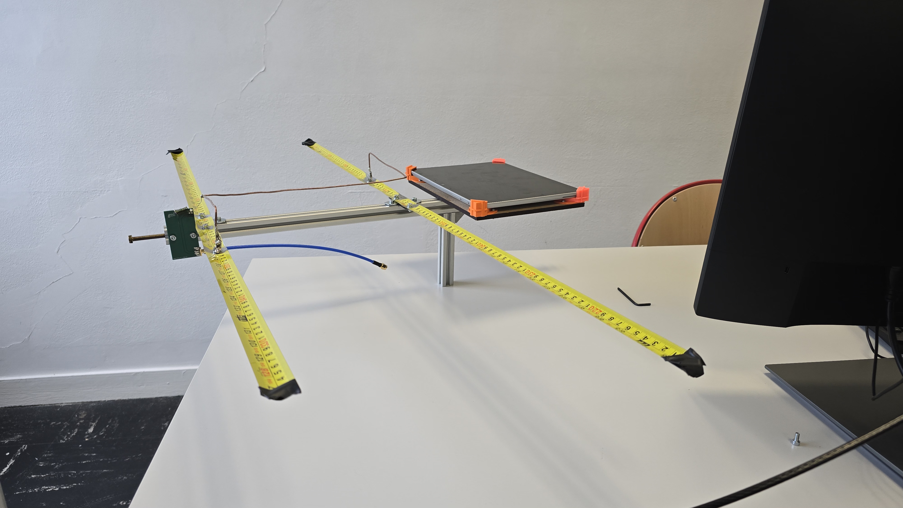
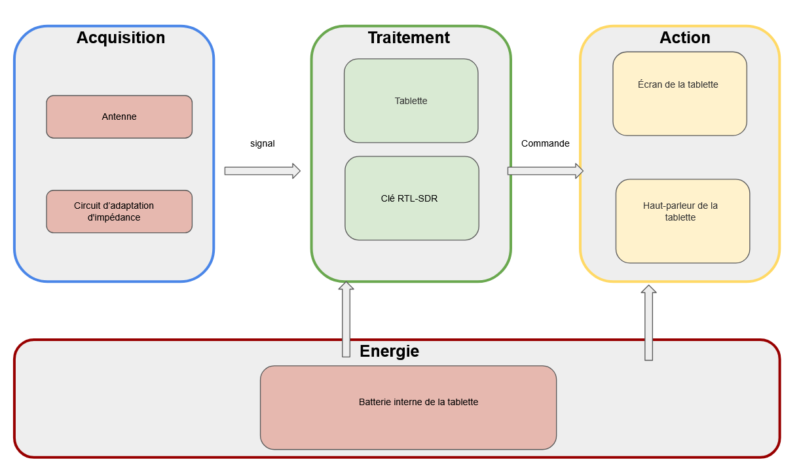
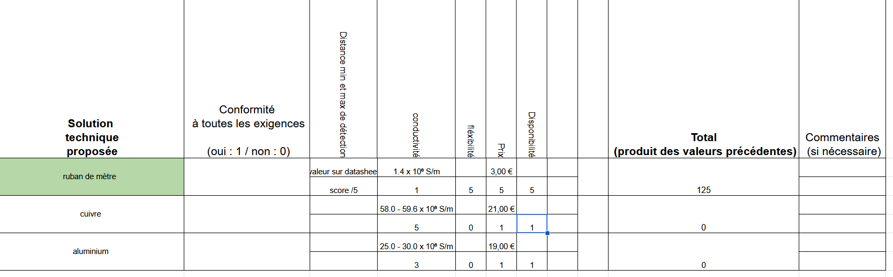
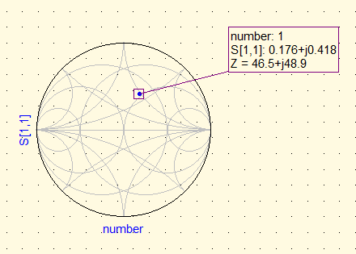
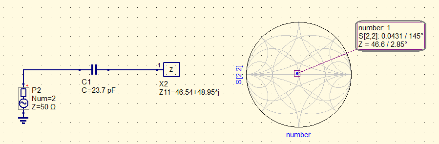
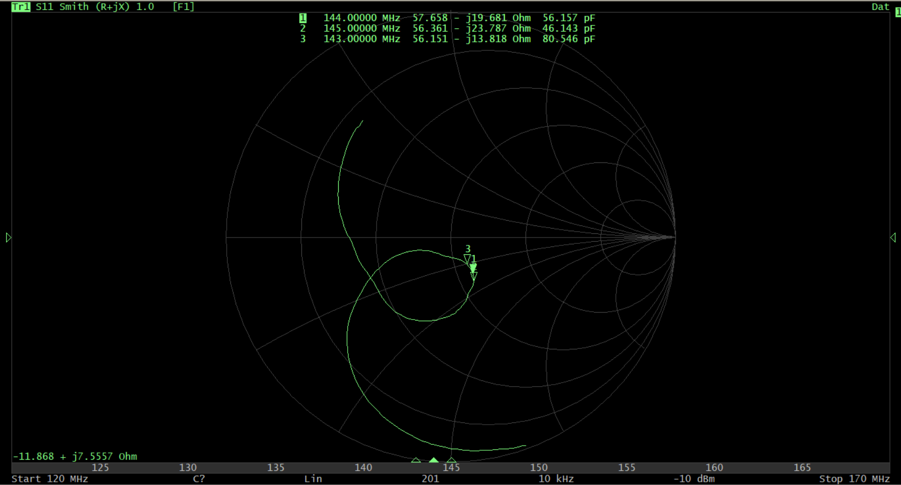
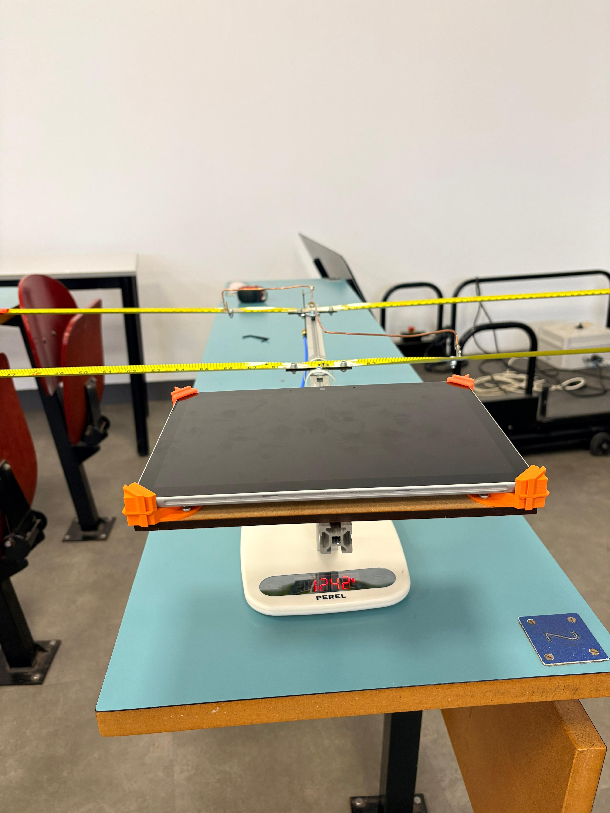

Challenge Radiogoniométrie (CDR)
Pour ce projet, il nous fallait concevoir un subsystéme à integrer dans un système de localisation radio.
Le subsystème à developper c'était une antenne directive HB9CV pour la localisation radio sur la bande 144 MHz, couplée à une clé RTL-SDR. Ce projet couvre l'ensemble du cycle de conception : du cahier des charges à l'adaptation d'impédance, en passant par la simulation électromagnétique et la validation matérielle.
À la fin, nous avons dû implementer ce subsystème au système de localisation radio pour la validation finale du projet.

Architecture fonctionnelle
Le système est découpé en plusieurs blocs pour assurer la capture et le traitement du signal radio :
- Acquisition RF : L'antenne capte le signal électromagnétique, qui traverse ensuite un circuit d'adaptation d'impédance pour maximiser le transfert d'énergie.
- Traitement et Interface : Le signal est numérisé par une clé USB RTL-SDR et traité sur une tablette Windows via le logiciel GNU Radio Companion pour déterminer la direction d'arrivée.

Solution technique pour répondre à une fonction
L'exigence rigidité dit que les éléments rayonnant de l'antenne doivent être flexible, mais à mémoire de forme.
Pour répondre à cette exigence, nous avons décidé de faire une fiche d'aide à la décision pour comparer différentes options de matériaux flexibles à mémoire de forme en tenant en compte égalemet l'exigence cout (le coût de fabrication de l'antenne devait être inférieur à 50 euros).
Après avoir comparé différentes options, nous avons choisi d'utiliser du mètre ruban en acier pour les éléments rayonnants de l'antenne. Ce matériau offre une excellente flexibilité tout en conservant une mémoire de forme suffisante pour maintenir la configuration de l'antenne. De plus, le mètre ruban en acier est facilement disponible et économique, ce qui correspond parfaitement à notre exigence de coût.

Adaptation
Avant la fabrication physique, le comportement de l'antenne a été simulé numériquement :
- Abaque de Smith : L'impédance simulée à 144 MHz nécessitait une correction. Un condensateur série de 23,7 pF a été calculé pour ramener le système à la résonance.
À gauche, image avant l'adaptation d'impédance montrant une résonance à 144 MHz avec une impédance de 46,5 + j48,9. À droite, après l'ajout du condensateur de 23,7 pF, l'impédance à la fréquence de 144 MHz est améliorée.


Validation de la performance
- Fréquence : Le produit final résonne à 143,5 MHz (exigence : 144 MHz +/- 2 MHz).
Pour vérifier cette exigence, nous avons utilisé un analyseur de réseau vectoriel (VNA) pour mesurer les paramètres S de l'antenne. En regardant le paramètre S11 sur un abaque de Smith obtenu à partir du VNA, nous avons confirmé que l'antenne résonnait à la fréquence cible de 143,5 MHz car le sommet de la boucle est dans cette zone, ce qui est conforme à notre exigence de 144 MHz +/- 2 MHz.

Installation et mise en service
Après avoir fini la validation de l'antenne, nous avons intégré le subsystème dans le système de localisation radio pour la validation finale du projet.
L'antenne conçue est seulement le composant d'acquisition du signal, mais pour la validation finale du projet, nous avons dû connecter l'antenne à une clé RTL-SDR et instaler la tablette avec le logiciel GNU Radio Companion sur l'espace dédié.
